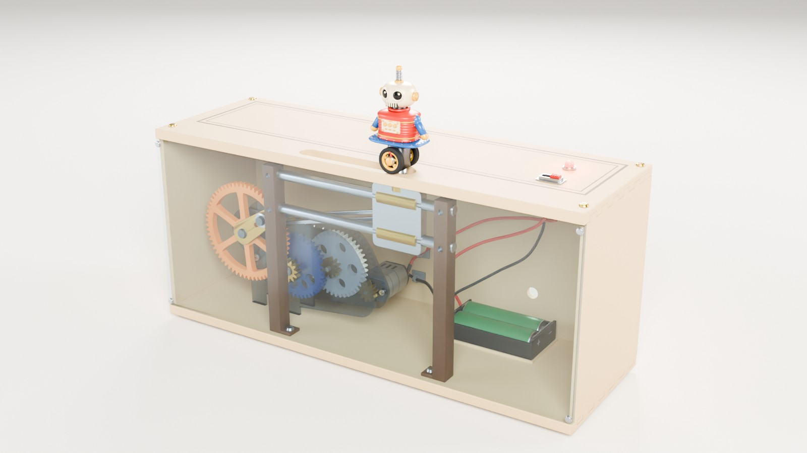
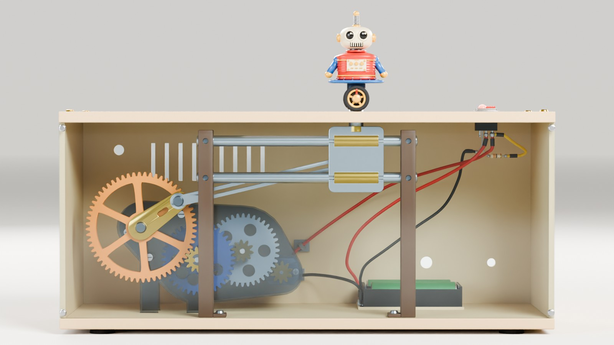
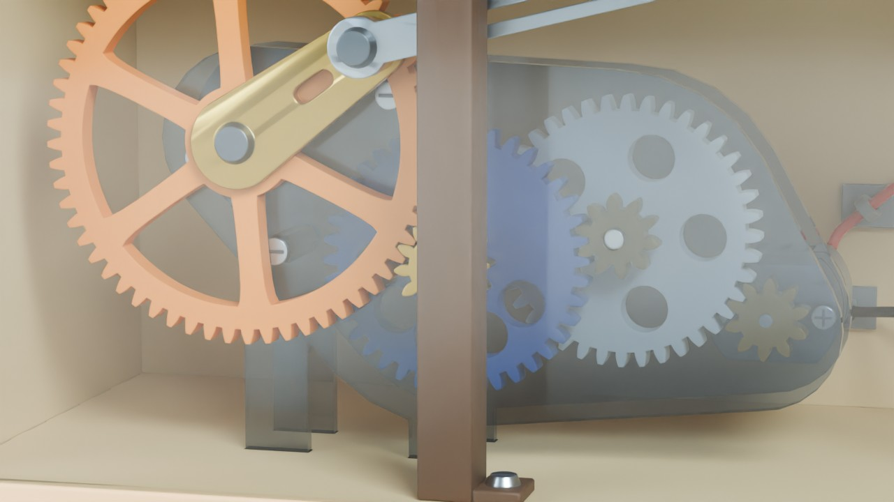
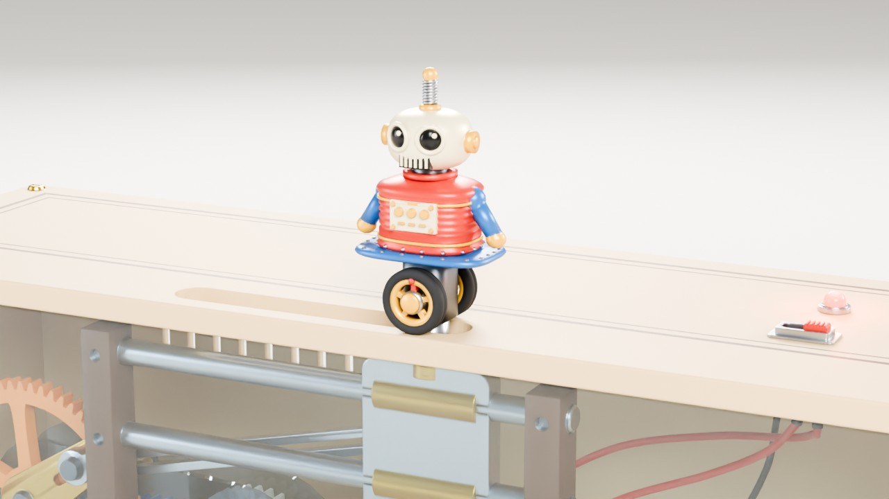
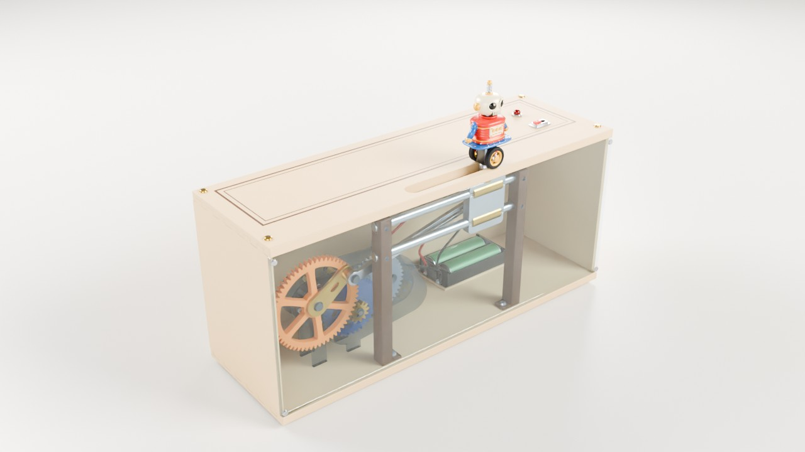

부품 불러오는 중…
크랭크0°
캐리지 x0.0 mm
크랭크 회전0 rpm
모터축0 rpm
어떻게 움직이나
- 모터 3 V 마이크로 DC 모터(약 6000 rpm)가 10T 피니언을 돌립니다.
- 3단 감속 10→40T, 10→40T, 12→60T로 4 × 4 × 5 = 80 : 1. 크랭크는 약 75 rpm.
- 크랭크 반지름 26 mm 핀이 원을 그립니다.
- 커넥팅 로드 길이 100 mm 로드가 핀과 캐리지를 잇습니다.
- 캐리지 이중 가이드 로드 위에서 좌우로만 미끄러집니다. 행정 56.6 mm.
- 로봇 캐리지에 실려 뚜껑 슬롯을 따라 왕복하고, 바퀴는 굴러가며 안테나가 관성으로 흔들립니다.
Blender 렌더
같은 GLB 부품을 Blender Cycles로 렌더한 결과입니다.





부품과 모델
| 모듈 | GLB | 구성 |
|---|---|---|
| 구동부 | drive.glb | 마이크로 모터, 아크릴 섀시(앞·뒤판), 스탠드오프, 기어 6단(P1, G1·P2, G2·P3, G3) |
| 슬라이드 | slide.glb | 크랭크 핀 어셈블리, 커넥팅 로드, 캐리지, 이중 가이드 로드 |
| 피규어 | figure.glb | 양철 로봇 몸통, 앞·뒤 바퀴, 안테나 |
| 전자부 | electronics.glb | 2×AA 배터리 홀더, 슬라이드 스위치, LED + 저항, 배선, 클립 |
| 하우징 | housing.glb | 자작나무 바닥·벽·뚜껑, 투명 아크릴 앞판 |
모든 부품은 하나의 조립 좌표계(Z-up, mm)를 공유합니다. 노드 원점·감속비·기구학은 spec/kinematics.json에 있습니다.